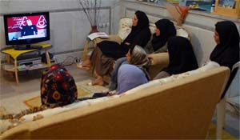
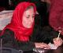
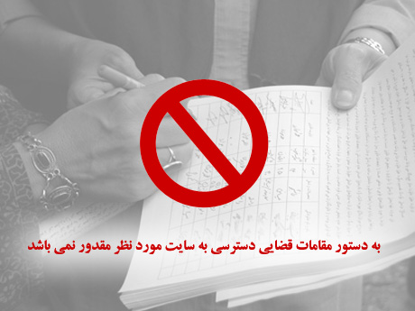
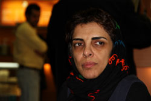
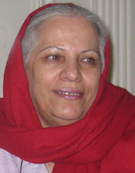
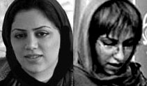

|
|
News
Latest update – Monday 17 March 2014.
Articles in this section
- 12 May 2008
- 7 May 2008

- 7 May 2008

- 7 May 2008
- 2 May 2008
- 30 April 2008

- 28 April 2008

Photo Change, the photoblog of the Campaign Blocked
- 23 April 2008
- 19 April 2008
- 13 April 2008

- 13 April 2008
- 8 April 2008
- 6 April 2008

- 29 March 2008
- 28 March 2008
- 7 March 2008
- 7 March 2008
Message of Souhayr Belhassen, FIDH President, on International Women’s Day
- 7 March 2008

- 3 March 2008

- 29 February 2008
- 20 February 2008

- 20 February 2008
- 16 February 2008

- 15 February 2008

- 13 February 2008
- 12 February 2008

- 23 January 2008

- 23 January 2008
- 22 January 2008
Interview with Isa Saharkhiz
Interview by: Elnaz Ansari/Translation by: Sussan Tahmasebi
- 4 January 2008

|